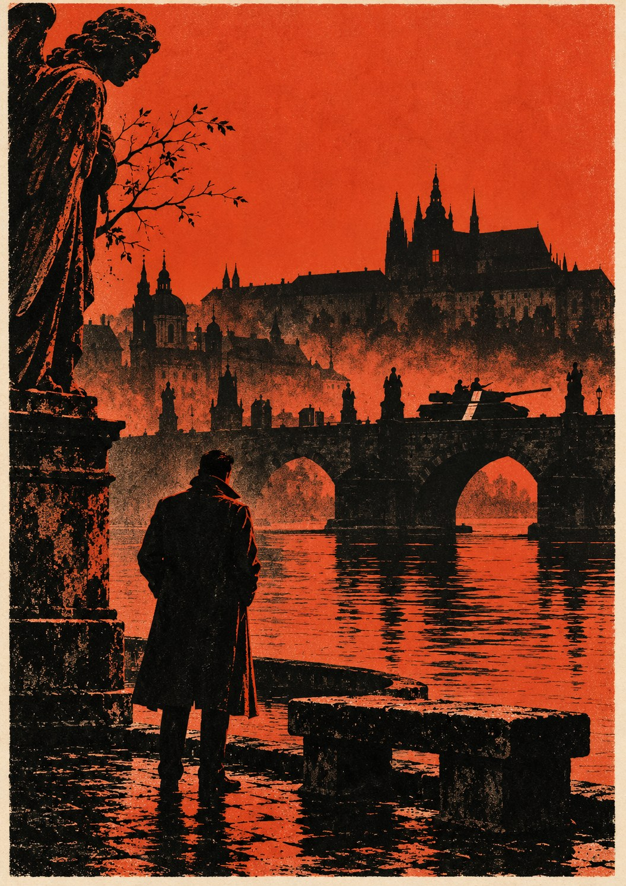

Весна

Поспешим, любимая: пора ещё не вышла,
А промедление обоим нам во вред.— Мартин Опиц, «Поспешим, любимая»
Глава первая
Кит Фэрроу любил дорогу из Вены в Прагу за то, что на ней ничего не нужно было решать.
Решали другие. В Лондоне, в доме на Кембридж-сёркус, где он за четыре года службы побывал всего трижды и ни разу выше второго этажа, решали, куда и когда ему ехать. В Актоне, в кирпичном флигеле с вывеской транспортной конторы, где сидел его отдел, решали, на какой машине, с каким паспортом и с какой историей на случай, если спросят. В Вене решали, в какой гостинице ему ночевать. От Кита требовалось только ехать, не опаздывать и не любопытствовать, и все три вещи он умел лучше других.
В Цирке таких, как он, называли фонарщиками. Они возили пакеты, ставили меловые метки на стенах и забирали из тайников то, что туда положили другие, и настоящие разведчики смотрели на них примерно так, как хирург смотрит на санитара. Кит не обижался. Он два года прослужил в войсках связи в Германии и знал, что из санитаров и связистов живыми возвращается больше народу, чем из хирургов и героев. Ему было под тридцать, у него были мать в Ридинге, девушка в Хэмпстеде, которая считала, что он продаёт тракторные запчасти, и твёрдая рука за рулём.
В апреле шестьдесят восьмого года он ехал в Прагу в четвёртый раз за весну.
Машина была серая «кортина» с английскими номерами, в багажнике лежали чемодан, путеводитель Бедекера и два блока сигарет для пограничников, а в паспорте стояла чехословацкая туристическая виза, полученная в Вене за одно утро. Ещё прошлой осенью на такую визу уходило две недели и анкета на четырёх страницах. Теперь консульский чиновник поставил штамп, улыбнулся и сказал по-английски «добро пожаловать», и Кит, который за три предыдущие поездки ни разу не видел чехословацкого чиновника улыбающимся, так растерялся, что чуть не забыл паспорт на прилавке.
Границу он пересёк у Микулова, после полудня. В прошлый раз, в декабре, его держали там час с лишним, заставили вынуть из багажника всё, вплоть до запасного колеса, и молодой пограничник с автоматом на груди листал Бедекера страницу за страницей, словно искал в нём себя. В этот раз тот же пограничник, или другой, очень на него похожий, заглянул в машину, увидел на сиденье свежую венскую газету и спросил, нельзя ли её взять. На первой полосе был Дубчек. Кит отдал газету и блок сигарет в придачу, шлагбаум поднялся, и вся граница заняла двенадцать минут.
Дальше были виноградники в синеватом тумане, деревни с белыми церквами, Брно, потом длинная дорога через Чешско-Моравскую возвышенность, и на всей этой дороге Кит замечал то, чего замечать ему не полагалось. В деревнях на заборах висели вырезанные из газет портреты, и на портретах были не те лица, что осенью. На заправке под Йиглавой старик в спецовке, заливая бензин, вдруг спросил его на ломаном немецком, что думают о них в Англии, и Кит, которому в Актоне строго запрещали разговоры о политике, ответил, что в Англии думают о них хорошо. Старик засмеялся и не взял чаевых. В Англии не думали о них никак. В Англии думали о фунте, о вьетнамских демонстрациях и о том, кто возьмёт кубок, но Киту показалось невежливым это говорить.
В Прагу он въехал в сумерках. Он помнил этот город серым, с тёмными витринами и людьми, которые ходили быстро и смотрели себе под ноги. Теперь на Вацлавской площади стояли кучками и спорили. У киосков толпились очереди за газетами, и газеты читали тут же, вслух, передавая друг другу. Возле музея студент в свитере стоял на ящике и что-то кричал, и люди вокруг смеялись и хлопали, а милиционер на углу слушал вместе со всеми, заложив руки за спину. Кит не понимал по-чешски ни слова, но понял, что студент рассказывает анекдот, и что за такой анекдот ещё год назад полагались годы.
Он поставил машину у гостиницы, как велели, поужинал в ресторане на первом этаже, как велели, и в девять часов пошёл пешком через Карлов мост на Малую Страну. Дом был старый, с гербом над дверью, на третьем этаже горел свет. На доске у звонка среди чешских фамилий была одна английская, написанная от руки, и под ней стояло: «Би-би-си».
Хозяин квартиры открыл сам, в рубашке с закатанными рукавами, с карандашом за ухом. За его спиной в комнате стучал телекс и сидели двое студентов с бумагами. Кит сказал то, что ему велели сказать: что он друг Тома из Вены и что Том просил забрать книгу, которую ему обещали. Хозяин кивнул, вышел и вернулся с путеводителем по Праге в мягкой обложке, чуть толще, чем следовало.
— Передайте Тому, что тут нет ничего нового, — сказал он. — Всё то же самое, только подробнее. А вы на площади были? Сходите завтра утром, пока не уехали. Такое бывает раз в жизни, и то не у всех.
Говорил он спокойно, чуть устало, как говорят люди, которым не нужно ничего доказывать, и Кит, который много чего слышал о корреспондентах и ничего хорошего, спускаясь по лестнице, решил, что этот ему нравится.
Путеводитель он не открывал. В номере он засунул его в чемодан, между рубашками, а утром, перед выездом, переложил в тайник под обшивкой багажника, который в Актоне называли аптечкой. Что именно в путеводителе, кто написал листки, вклеенные между страницами, и что с тем человеком будет, если листки найдут, Кит не знал и старался не думать. В Актоне ему говорили, что фонарщик, который думает о том, что везёт, едет на границу с таким лицом, что его обыскивают первым.
Но на площадь утром он всё-таки сходил, хотя никто его туда не посылал. Постоял полчаса в толпе, послушал, как спорят люди на языке, которого он не знал, и увидел пожилую женщину, которая читала газету и плакала, не вытирая слёз. Потом посмотрел на часы, спохватился и почти бегом вернулся к машине, потому что в Вене его ждали к четырём и опаздывать он не умел.
Во всём этом была его первая вольность за четыре года службы. Весной шестьдесят восьмого года многие позволили себе вольности, и платить за них пришлось не всем, а тем, кто не успел уехать. Кит успел. За вольности он заплатил потом, в сентябре, и другой монетой.
Глава вторая
В мае шестьдесят восьмого года у Джорджа Смайли не было определённой должности, и Контроль этим пользовался.
Он сидел в комнате на четвёртом этаже дома на Кембридж-сёркус, окном во двор, и на двери у него не было таблички. Ему приносили дела, которые не знали, куда деть: спорные донесения, старые провалы, заявления агентов о пенсии. Иногда Контроль звал его наверх, на пятый этаж, и сажал в угол на совещаниях, куда Смайли по должности ходить не полагалось, и ни разу не объяснил зачем. Остальные привыкли и перестали замечать его так же, как перестали замечать старый шкаф с цифровым замком, стоявший в том же углу.
Именно там, в углу, он впервые услышал о «Жаворонке».
На совещании было пятеро, не считая самого Смайли. Контроль сидел во главе стола, в сером костюме, с чашкой остывшего чая и с тем выражением лица, с каким человек слушает прогноз погоды на места, куда не собирается ехать. Перси Аллелайн, румяный шотландец, слишком громкий для этой комнаты, много говорил о том, что коммунисты есть коммунисты, сколько бы они ни улыбались. Рой Бланд, сын докера, который знал Восточную Европу лучше всех в здании, пил без спроса чай Контроля и молчал. Ресёрч, отдел, который помнил всё, представляла толстая дама с больными, распухшими руками, которую все звали Конни. А у окна, спиной к свету, развалившись так, словно зашёл сюда мимоходом и скоро уйдёт, сидел Билл Хейдон.
Источник был его. То есть не совсем его, потому что чех пришёл сам, в феврале, через знакомого музыканта, гастролировавшего в Вене. Но Хейдон первым понял, чего стоит предложенное, первым понял, что через пражскую резидентуру вести его нельзя, и первым нашёл другой путь. Связной был человек вне посольства, с настоящей пражской жизнью и настоящей причиной там быть, и кто это, Смайли не сказали. Имени самого архивиста в Лондоне не знал никто: его знали только связной и венский музыкант, а Хейдон, как он охотно рассказывал, нарочно о нём не спрашивал. «Мне не нужно знать, как его зовут, — говорил он. — Мне нужно знать, что он пишет».
— Это архивист, — сказал Хейдон, и в голосе его была та нежность, с которой он говорил о вещах, которые ему по сердцу. — Двадцать лет сидит в подвале своего министерства и раскладывает по папкам чужие грехи. И вдруг весна, и ему тоже захотелось. Вы представляете, каково это, в пятьдесят с лишним вдруг захотеть?
Никто не ответил, и Хейдон не ждал ответа.
Архивист присылал имена. В чехословацкой госбезопасности, которая с весны числилась под новым министром-реформатором, оставались люди, которые подчинялись не министру, а советникам из Москвы, и эти люди тихо составляли списки. Кого взять в первую ночь, кого во вторую, кто сам придёт каяться. Архивист видел, какие папки они брали и в каком порядке, и делал выводы, и выводы его, судя по тому, что читала вслух Конни, были невесёлыми и очень точными.
— Слишком хорошо, — сказал Контроль, когда она дочитала. — Источники, которые говорят нам именно то, чего мы боимся, приятны почти так же, как те, которые говорят нам то, чего мы хотим. Билл, вы ему верите?
Хейдон сказал, что верит ему больше, чем себе, и что это, правду сказать, нетрудно. Аллелайн засмеялся громче всех. Контроль не засмеялся и сказал, что донесения «Жаворонка» пойдут по особой рассылке и никуда больше, ни в министерство, ни американцам, пока он сам не распорядится. И продиктовал рассылку.
Смайли запомнил её, не записывая, как запоминал всё, что слышал в этой комнате. В рассылке были все, кто сидел за столом, и больше никого. И ещё он запомнил, что в конце Контроль, не поднимая глаз, сказал: «И Джорджу копию», — и что Хейдон при этих словах обернулся и улыбнулся ему так, как улыбаются старому другу, которого рады видеть в такой хорошей компании.
⁂
Дома, на Байуотер-стрит, в тот вечер было тихо. Энн уехала на неделю к друзьям в Шотландию, а может быть, не к друзьям и не в Шотландию. Смайли давно перестал проверять. Он посидел с книгой у огня, но читал плохо, потому что думал о человеке, который в пятьдесят с лишним вдруг захотел. Он понимал его лучше, чем Хейдон, и боялся за него больше, чем Контроль. Люди, которые двадцать лет терпели, а потом разрешили себе надежду, теряют осторожность быстрее всех. Это Смайли знал по войне, и ещё он знал это по себе, правда, не по войне.
Перед сном он достал из ящика стола чёрный блокнот, старый, с размахрившимся корешком, и перелистал до страницы, где были двенадцать вычеркнутых строчек и одна невычеркнутая. Посмотрел на неё, ничего не приписал и убрал блокнот обратно. Приписывать было нечего. Просто ему захотелось убедиться, что строчка на месте.
Глава третья
К июню Кит Фэрроу съездил в Прагу ещё дважды и начал считать себя знатоком города. Он знал, в какой пивной на Малой Стране дают самое холодное пиво, какой трамвай идёт к Градчанам и на какой скамейке на Кампе лучше всего сидеть вечером, когда солнце садится за Влтаву. Об этой скамейке ему рассказал Хэлифакс, как и обо всём остальном.
Корреспондента звали Марк Хэлифакс. Ему было за тридцать, в Праге он жил третий год, а до того жил в Вене и в Белграде, и говорил, как посчитал Кит, на пяти языках, не считая английского. Венгерский у него был от матери, немецкий и французский со школы и из армии, чешский и сербский он выучил сам. Его репортажи слушала по вечерам вся Англия, включая, как выяснилось, мать Кита в Ридинге, которая говорила, что у него такой голос, словно он сидит у тебя на кухне и никуда не торопится. Кит не стал ей рассказывать, что сидел у этого голоса на кухне и что кухня была завалена газетами до потолка.
Студенты его любили. Они приходили к нему без предупреждения, сидели на полу, пили его вино и читали ему вслух статьи, которые неделю назад нельзя было напечатать, а теперь печатали на первой странице. В конце июня, в один из таких вечеров, девушка с короткой стрижкой прочла вслух целиком длинный текст из сегодняшних газет. Он назывался «Две тысячи слов», и под ним стояли подписи писателей, учёных, спортсменов и рабочих. Хэлифакс переводил Киту шёпотом, кусками: что люди должны сами следить, чтобы ничего не повернуло вспять; что их может потеснить чужая сила и что тогда они будут стоять за своё правительство. Когда девушка дочитала, в комнате стало так тихо, что слышно было, как внизу на улице кто-то играет на гитаре.
— Русские этого не простят, — сказал кто-то по-немецки.
— Русские не простят ничего, — ответил Хэлифакс по-чешски, и все засмеялись, и Кит тоже, хотя не понял слов и понял только, что смеялись не от веселья.
Потом, когда студенты разошлись, Хэлифакс сварил кофе по-турецки в маленькой медной турке, привезённой из Белграда, и заговорил о деле. Он сказал, что его квартира стала слишком людной, что на лестнице теперь вечно кто-нибудь сидит и что гость с английскими номерами, который приезжает раз в месяц и уходит с книгой, рано или поздно кого-нибудь заинтересует. Дальше пакеты будут лежать в другом месте. Он нарисовал на обороте сигаретной пачки план Ольшанского кладбища, отметил крестиком старое надгробие с ангелом, у которого отставал камень в постаменте, и показал, какой меловой знак на ограде будет означать, что пакет на месте.
В Актоне Киту вбили в голову, что тайники выбирает не фонарщик и не связной, а Лондон. Он сказал об этом, смущаясь, как младший по чину говорит старшему о правилах, в которые тот давно не верит. Хэлифакс улыбнулся и сказал, что Лондон, разумеется, прав, и что Кит может спросить Лондон, если хочет, только ответ придёт через три недели, а лестница людная уже сегодня.
— Мы здесь, а они там, — сказал он. — Это вечная беда всех, кто здесь.
Кит подумал и согласился. В отчёте для Актона он честно записал, что тайник перенесён на Ольшанское кладбище из соображений безопасности, и честно не записал, чьи это были соображения. Он и сам уже не вполне помнил, чьи. Хэлифакс умел так предлагать, что через час предложение казалось твоим.
В тот же вечер он объяснил Киту запасной порядок. Если тайник окажется пуст или с ним, Хэлифаксом, что-нибудь случится, если его вышлют или он заболеет, то по вторникам в семь вечера на той самой скамейке на Кампе будет сидеть человек с нотной папкой. Этот порядок Кит честно описал в отчёте, и Актон его утвердил. И чтобы Кит знал его в лицо, Хэлифакс взял его на следующий день в Рудольфинум на концерт.
Играли Дворжака. Кит в музыке не разбирался и смотрел не на сцену. В седьмом ряду балкона, с краю, сидели пожилой седой человек в костюме, который был ему велик, и женщина с прямой спиной и большими руками, которые всё время двигались у неё на коленях, словно она играла вместе с оркестром. В антракте седой человек прошёл мимо них в буфет, не взглянув, и Кит успел разглядеть его лицо: усталое, вежливое и в эту минуту счастливое. На обратном пути он нёс две чашки кофе и нёс их очень осторожно, как носят люди, которые давно ничего не проливали и не собираются начинать.
Имени его Киту не сказали. Хэлифакс сказал только, что жена у него учительница музыки и что она ничего не знает. Выходя после концерта на набережную, в тёплую июньскую темноту, Кит подумал, что жена, которая играет вместе с оркестром на собственных коленях, вряд ли ничего не знает о своём муже. Но думать об этом не входило в его обязанности, и он не стал.
Глава четвёртая
Вторник, шестое августа, выдался жарким, и на пятом этаже дома на Кембридж-сёркус впервые на памяти Смайли открыли окна. Контроль сидел в том же сером костюме, что и в мае, и выглядел так, словно жара была личным оскорблением, которое он решил не замечать. Остальные сидели без пиджаков. Хейдон пришёл в старой крикетной рубашке с пятном краски на манжете и сел, как всегда, у окна.
В субботу в Братиславе чехи, русские и ещё четверо союзников подписали длинную и тёплую декларацию, и газеты всего мира написали, что кризис миновал. В понедельник пришло новое донесение «Жаворонка». С июля фонарщик ездил в Прагу раз в две недели, и тридцатого июля он вынул пакет из тайника на Ольшанском кладбище, и в нём было написано, что ничего не миновало.
Конни читала его вслух, как и прежние. Архивист писал, что в конце июля из архива забрали все папки по списку, который он уже передавал в июне, и что папки брал не кто-нибудь, а сам заместитель начальника управления, тот, кто чаще других встречался с советниками. Что на папках появились пометки карандашом, цифры и буквы, и что по этим пометкам можно понять, кого и в какой очерёдности будут брать. В списке были министры, редакторы газет и один писатель, которого читала вся Европа. Архивист писал, что так папки готовят не на случай, а на дату. Даты он не знал.
— И что вы предлагаете? — спросил Контроль, ни к кому не обращаясь.
Предлагали многое. Рой Бланд предложил предупредить чехов. Не всех, а одного человека, нового министра внутренних дел, который сам сидел в тюрьме при прежнем режиме и знал, что такое папка с карандашными пометками. Аллелайн сказал, что чехи сами выбрали себе друзей и что не дело Цирка спасать коммунистов от коммунистов. Хейдон сказал, что предупредить, конечно, надо, только не чехов, а американцев: пусть кузены наконец потратят своё влияние на что-нибудь пристойное. Сказал он это так, что все засмеялись, и никто не принял сказанного всерьёз, и Смайли, который знал Хейдона тридцать лет, так и не понял, что именно тот имел в виду.
Сам Смайли молчал, пока Контроль не посмотрел в его угол. Тогда он задал один вопрос и задал его Конни, потому что только Конни могла на него ответить: сколько человек в архиве видели, какие папки брали в конце июля?
Конни посмотрела в свои бумаги, хотя прекрасно помнила и так.
— Трое, дорогой, — сказала она. — Старший архивист, девочка, которая выдаёт папки, и наш друг. Девочке двадцать лет, она дочь майора и читать не любит. Старший архивист сам из них. Так что если тот, кто брал папки, вдруг узнает, что про его папку знают в Лондоне, ему даже не придётся думать. И не ему одному.
Наступило молчание, и в открытое окно было слышно, как на Чаринг-Кросс-роуд сигналит автобус. Потом Контроль сказал, что предупреждать никого не будут. Не чехов, потому что чехи тут же начнут искать, кто их предупредил, и найдут за неделю. Не американцев, потому что американцы предупредят чехов сами, и тогда тем более. Архивист будет работать дальше и пришлёт дату, если её узнает. А когда он её пришлёт, тогда и поговорим.
— А если не узнает? — спросил Бланд.
— Тогда мы узнаем её из газет, как все остальные, — сказал Контроль. — Рой, мы не Армия спасения. Мы даже не министерство иностранных дел, слава Богу.
На этом совещание кончилось. Расходились странно тихо, как расходятся люди, которые только что решили ничего не делать и не вполне уверены, что это тоже решение. Хейдон догнал Смайли на лестнице, обнял за плечи и сказал, что вопрос был чудесный, в старом стиле, что таких вопросов теперь никто не задаёт, и что Энн передаёт привет. Они виделись в субботу у кого-то в гостях. Смайли поблагодарил. Он не знал, что Энн была в субботу в гостях.
У себя на четвёртом этаже он сидел до сумерек, а когда стемнело, не стал зажигать лампу. Его тревожил не Хейдон и не Энн, или не только они. Его тревожил собственный вопрос. До того как он его задал, в комнате знали, что источник сидит в архиве. После того как Конни ответила, в комнате знали, что он один из троих. Из троих, среди которых одна девочка, не любящая читать, и один начальник, который сам из них.
Смайли сказал себе, что никто из сидевших за столом не выйдет с этим знанием из здания, не потому что им нельзя, а потому что им незачем. Он повторил себе это дважды. Потом записал на краю промокашки для себя число и час совещания, чего никогда не делал, и сам не смог бы сказать зачем.
Глава пятая
Во вторник, тринадцатого августа, тайник на Ольшанском кладбище оказался пуст.
Кит пришёл туда в десять утра, как приходил всегда, с небольшим букетом астр из лавки у ворот. Кладбище было большое и запущенное, с вязами и плющом, с каменными ангелами, у которых не хватало крыла или носа, и по утрам на нём бывали только старухи с лейками и редкие туристы, искавшие знаменитые могилы. Мелового знака на ограде не было. Кит всё равно подошёл к ангелу, положил астры, нагнулся поправить их и провёл пальцами по щели за отставшим камнем. Щель была сухая и пустая, в ней жил паук.
По инструкции пустой тайник ничего не означал. Архивист мог заболеть, уехать на дачу, просто не собрать ничего нового. По инструкции Кит должен был в семь вечера посидеть на скамейке на Кампе и ни к кому не подходить, а если никто не придёт, ждать следующего вторника. Всё это было просто и разумно, и Кит так и сделал.
На Кампе было тепло и людно. На траве у реки сидели студенты с гитарой, по дорожке гуляли немцы с фотоаппаратами, и старик на соседней скамейке кормил воробьёв и разговаривал с ними по-чешски. Никто с нотной папкой не пришёл. Кит просидел до восьми, потом до половины девятого, потом встал и пошёл на Малую Страну, к дому с гербом над дверью, хотя инструкция ничего подобного не предусматривала.
Хэлифакс был дома и один. На этот раз он не улыбнулся, а быстро втянул Кита в прихожую и закрыл дверь. Он выслушал про пустой тайник и пустую скамейку, не перебивая, и потом долго стоял у окна спиной к Киту. Наконец он сказал, что, пожалуй, стоит просто пройтись. Двое иностранцев гуляют по Виноградам в тёплый вечер, это самая естественная вещь на свете. Надо просто посмотреть, горит ли свет.
Кит сказал, что в Актоне за такие прогулки снимают голову. Хэлифакс ответил, что в Актоне не бывали на концерте Дворжака и не видели, как этот человек несёт две чашки кофе. И Кит пошёл.
Идти пришлось долго, через реку, вверх по Вацлавской площади, мимо музея и дальше по тихим улицам с липами, где стояли доходные дома начала века с лепными девами над подъездами. Хэлифакс шёл не торопясь и рассказывал об архитектуре. Он знал, кто строил каждый дом, и кто жил в нём до войны, и кого из него увезли в сорок втором и кого в пятьдесят втором, и рассказывал об этом одним и тем же спокойным голосом, каким говорил по радио.
У одного из домов он замедлил шаг и сказал, не поворачивая головы: третий этаж, два окна слева.
Одно окно было тёмным. Во втором горела лампа под абажуром, и в её свете была видна крышка пианино, а за пианино сидела женщина с прямой спиной. Руки у неё лежали на клавишах, но она не играла. Кит прошёл под этим окном тридцать шагов, и за эти тридцать шагов она не шевельнулась. Они дошли до угла, и Хэлифакс свернул в переулок, и только там Кит понял, что всё это время не дышал.
— Уезжайте, — сказал Хэлифакс. — Завтра же утром. И запомните: вы ничего не видели. Вы гуляли по Виноградам с английским журналистом, который рассказывал вам про модерн.
Но уехать наутро Кит не мог. Инструкция велела ждать следующего вторника, и на рассвете он заказал на главном почтамте разговор с Веной и сказал то, что говорилось в таких случаях: что тётя не пришла на вокзал. В Вене велели ждать. О прогулке по Виноградам он не сказал. Должно быть, ему было стыдно, а может быть, он не хотел подводить Хэлифакса, и это тоже потом записали в его дело.
Шесть дней он жил в пражской гостинице туристом, которому нечего делать. Ходил в музеи, ездил на трамвае до конечной и обратно, пил пиво и писал девушке в Хэмпстед открытки про тракторные запчасти. В газетах, которые он не умел читать, были фотографии улыбающегося Дубчека. Во вторник, двадцатого августа, он снова просидел с семи до восьми на скамейке на Кампе, и никто не пришёл, и старика с воробьями в тот вечер тоже не было. Он вернулся в гостиницу, поужинал и лёг спать, чтобы утром выехать пораньше.
Глава шестая
Разбудили его самолёты.
Было около двух часов ночи, и над городом шли тяжёлые машины, одна за другой, так низко, что в окне дрожало стекло. Кит два года прослужил в Германии и знал этот звук. Так звучат транспортные самолёты, когда их много и они идут на посадку. Он оделся в темноте и сел на край кровати и так и просидел до рассвета, потому что инструкции на такой случай у него не было, а без инструкции он не знал, что делают фонарщики, когда в город входит чужая армия.
На рассвете по улице под окнами прошли танки. Они шли не быстро, в облаке синего дыма, с танкистами в шлемофонах, по пояс торчавшими из люков, и на броне у них были белые полосы, как на учениях, чтобы не спутать свои танки с такими же чехословацкими. Люди выходили из подъездов в пальто, надетых поверх пижам, и стояли на тротуарах молча, а потом кто-то крикнул что-то по-русски, и мальчик из люка посмотрел на него с таким недоумением, словно ему обещали совсем другой приём.
К восьми утра со стороны Виноград началась стрельба. Потом, в Вене, Кит узнал, что стреляли у дома радио, где люди перегородили улицу трамваями и автобусами, чтобы радио могло говорить ещё час. Но тогда он знал только, что стреляют недалеко от тихих улиц с липами, где неделю назад он гулял с английским журналистом, и что там, на третьем этаже, стоит пианино.
Он позвонил Хэлифаксу из гостиницы. Телефон сначала был занят, потом молчал, потом Хэлифакс взял трубку и сказал быстро, по-английски, как говорят с человеком, который ошибся номером: что он ничем не может помочь, что всем англичанам советуют обращаться в посольство и что туристам лучше всего уезжать сегодня же, пока дороги на юг открыты. И положил трубку. Кит не обиделся. Он понял, что его телефон сейчас слушают как минимум две стороны, и подумал, что Хэлифакс справился с этим разговором лучше, чем справился бы он сам.
Из города он выбирался четыре часа. На мостах стояли танки, на перекрёстках стояли толпы, и на стенах, прямо на глазах, появлялись надписи краской и мелом. Одну он смог прочесть, потому что она была по-русски, а русские буквы он выучил ещё в Германии, на курсах радиоперехвата, и слово в ней было только одно, и его знал даже Кит: «Домой». На выезде из города кто-то уже начинал срывать таблички с названиями деревень и указатели, и Кит не сразу понял зачем, а потом понял и согласился, что мысль хорошая. Армия, которая не знает, где она, идёт медленнее.
На юг он поехал через Табор и Ческе-Будеёвице к переходу у Дольни-Двориште, потому что на дороге на Брно, как сказал ему на заправке немец с детьми в машине, стояли колонны. Дорога была забита машинами с чужими номерами, западногерманскими, австрийскими, голландскими, и между ними чем дальше, тем чаще попадались чешские, набитые до крыши чемоданами и перинами. На границе к вечеру стояла очередь в несколько километров, и пограничники с чешской стороны пропускали всех подряд, не заглядывая в багажники, и один из них, возвращая Киту паспорт, сказал по-немецки: «Расскажите там». Кит пообещал, хотя не представлял себе, кому и что он может рассказать.
В Вену он приехал за полночь. В квартире, где его ждали, было накурено и громко играло радио. Говорила Би-би-си. Ведущий из Лондона сказал, что сейчас будет репортаж из Праги, и в комнате стало тихо, и потом сквозь треск и свист зазвучал голос, который Кит узнал бы из тысячи. Хэлифакс рассказывал про танки у дома радио, про студентов, которые спорили с солдатами, про старуху, которая принесла солдату воды и потом плюнула ему под ноги. Он говорил неторопливо и точно, как говорил всегда, и в тот вечер его слушала вся Англия, и мать Кита в Ридинге тоже.
Потом Кит не раз пытался вспомнить, что он чувствовал, слушая этот голос. Вспомнить он смог только одно: что ему было стыдно за своё облегчение. Он сидел в тёплой накуренной комнате в Вене, а там, на третьем этаже над тихой улицей с липами, женщина сидела за пианино и не играла, и он ничем не мог ей помочь, да и не должен был.
Глава седьмая
Разбор провала Контроль поручил Смайли в первый понедельник сентября, и поручил так, что Смайли понял: дело уже разобрано, и теперь нужен человек, который разберёт его ещё раз.
— Они все уже знают, что произошло, — сказал Контроль, глядя в окно. — У Перси есть записка в десять страниц. Прочтите её, Джордж. Она хорошо написана. Меня всегда беспокоят хорошо написанные записки.
Записка действительно была написана хорошо. Её составили в отделе Аллелайна, но читалась она так, словно над ней поработал кто-то с чувством фразы. В ней говорилось, что источник «Жаворонок» арестован в четверг, восьмого августа, на рабочем месте, людьми из собственного министерства, за тринадцать дней до вторжения, и что известно это стало в конце августа от чеха-эмигранта, друга помощницы архивиста. Дальше шёл разбор причин, и все причины по очереди вели в одну сторону. Фонарщик Фэрроу в июне перенёс тайник на кладбище без санкции Лондона и сообщил об этом задним числом. Кладбище пустынное, иностранец с цветами на чужой могиле заметен издалека. Кроме того, тринадцатого августа Фэрроу, вопреки инструкции, прошёл мимо дома источника и не доложил об этом, что стало известно из отчёта связного. К счастью, арест к этому времени уже состоялся, и повредить фонарщик ничему не мог, но само нарушение характеризует его работу в целом. Вывод: источник, скорее всего, был замечен чешской службой наружного наблюдения на кладбище, через тайник, выбранный фонарщиком. Рекомендация: ужесточить дисциплину в отделе связи.
Смайли прочёл записку дважды. Всё в ней было правдой, кроме вывода. В ней была дата ареста, четверг, восьмое августа. И никто из писавших её не задался вопросом, почему чешская служба наружного наблюдения, заметив иностранца на кладбище в июне, ждала с арестом до августа и почему в августе вдруг перестала ждать. Ведь в августе на кладбище ничего нового не происходило. Новое происходило в Лондоне, во вторник, шестого, на пятом этаже, при открытых окнах.
Он не стал ничего никому говорить. Вместо этого он попросил прислать ему фонарщика.
⁂
Они встретились в конспиративной квартире в Кенсингтоне, в доме с белыми колоннами, из которых выкрошилась штукатурка. В квартире были два кресла в чехлах, газовая печка со счётчиком, в который надо было бросать шиллинги, и картина с лошадью над камином. Кит пришёл в костюме, надетом, судя по всему, впервые с чьих-то похорон, и сел на край кресла так, как сидят в приёмной у зубного врача. Записку Аллелайна он не читал, но ему её пересказали, и он пришёл с готовым признанием, как приходят с чемоданом, уже собранным на выход.
Смайли не стал слушать признания. Он попросил Кита рассказать всё с начала, с первой поездки, подробно и по порядку, а сам слушал, полузакрыв глаза и сложив руки на животе, и спрашивал редко и о пустяках. В какой гостинице Кит ночевал. Какое пиво пил Хэлифакс. Что играли в Рудольфинуме. Кит сначала отвечал коротко, потом длиннее, а потом забыл, что сидит на краю кресла, и откинулся назад.
Про тайник на кладбище Кит рассказал честно и сам себе удивился. В июне ему казалось, что это была его мысль, ну, почти его. Теперь, пересказывая вечер по порядку, с кофе в медной турке и планом на обороте сигаретной пачки, он вдруг услышал сам, что пачку рисовал не он. Про прогулку по Виноградам он сначала сказал, что сам напросился, потом замолчал, потом сказал, что нет, не сам. И что не хочет, чтобы у мистера Хэлифакса были неприятности, потому что мистер Хэлифакс хотел как лучше.
— Разумеется, — сказал Смайли. — Как лучше.
В конце Кит спросил, что теперь будет с ним. Смайли сказал правду: что не знает. И ещё одну правду, которую обычно не говорил никому: что архивиста взяли не из-за кладбища и не из-за прогулки и что Киту стоит перестать носить на себе этот костюм с похорон.
Кит посмотрел на него так, словно бы предпочёл, чтобы виноват был он. Смайли его понимал. Свою вину можно понести и отбыть срок. А с тем, что тебя использовали, придётся жить дальше, и срока у этого нет.
Глава восьмая
Регистратура Цирка помещалась в подвале и пахла так, как пахнут все архивы на свете: пылью, картоном и немного мышами. Смайли любил этот запах. Он подумал, что так же, наверное, пахло в подвале пражского министерства, где двадцать лет сидел человек, который в пятьдесят с лишним вдруг захотел, и что все архивисты мира, возможно, составляют одно непризнанное братство, и он сам в их числе.
Дело Хэлифакса ему выдала старшая регистраторша, вдова с седым пучком и пенсне на цепочке, которая работала здесь с войны и помнила Смайли молодым. Дело было тонкое. На обложке стояли фамилия, номер и две даты: осень пятьдесят шестого, когда дело завели, и зима шестьдесят восьмого, когда его подняли снова. Внутри была карточка с анкетными данными, копия списка наводчиков с припиской «Лучший мой ученик за много лет», вырезки с репортажами из Вены и Белграда и докладная записка на двух страницах, датированная февралём, с предложением использовать корреспондента Би-би-си в Праге как связного при новом источнике. Под запиской стояли инициалы Хейдона и резолюция Аллелайна: «Согласен. Кандидат проверен в пятьдесят шестом, препятствий не выявлено».
Отчёта Смайли пятьдесят шестого года в деле не было. Препятствия в пятьдесят шестом году были выявлены, и выявил их он сам.
Была опись на внутренней стороне обложки, и в описи листы с четвёртого по седьмой были аккуратно зачёркнуты, и на полях стоял штамп: «Изъято при плановой чистке дел». Дата чистки была шестьдесят пятый год. Подпись под штампом была такая, какие ставят на сотне бумаг в день: крючок и петля.
Регистраторша посмотрела на крючок и петлю сквозь пенсне и сказала, что в шестьдесят пятом чистили всё подряд, по приказу сверху, потому что в подвале кончилось место, и чистили не её девочки, а мальчики сверху, которых она не знала и которые не умели класть папки обратно. Книга выдачи за тот год давно ушла в печь вместе с другими книгами выдачи. Она сказала это и посмотрела на Смайли поверх пенсне долго и с сочувствием, как смотрят на человека, который потерял что-то ценное и давно знает, что не найдёт.
Верити тоже было не спросить. Доктор Эдвард Верити умер два года назад у себя в Оксфорде, от сердца, в кресле у камина, и «Таймс» напечатала о нём длинный некролог, а через неделю там же вышло дополнение к некрологу, тёплое и остроумное, за подписью «У. Х.». Гадать, чьи это инициалы, Смайли не пришлось: Уильям Хейдон когда-то слушал у Верити лекции о Габсбургах. Смайли тогда прочёл и то и другое и в чёрный блокнот ничего не записал.
⁂
Хейдон сам предложил пообедать. Он позвонил Смайли на следующий день после Регистратуры, и Смайли не стал спрашивать себя, случайно ли это. В Цирке все знали, кто и зачем спускался в подвал, через день, а иногда и через час.
Обедали в клубе Хейдона, в длинной столовой с портретами путешественников, которые все как один смотрели на обедающих с выражением людей, видевших Индию и не собирающихся об этом рассказывать. Хейдон заказал баранину и бутылку бордо и до самого сыра говорил о чём угодно, о выставке в Тейт и о новом романе знакомой писательницы, и был прекрасен, как бывал прекрасен всегда, когда хотел. А к сыру сказал, что слышал, будто Джордж занялся археологией.
— Марка предложил я, — сказал он просто, наливая себе вина. — Это в деле есть, ты видел. Мне нужен был человек в Праге, которого все знают и никто не подозревает, а Марка в Праге знают даже собаки. И потом, Джордж, ты ведь сам его когда-то смотрел, в том своём Оксфорде. Помнишь? Он лучше всех из того списка. В драки не лезет, бережёт чистые руки. Это же твои слова, если не ошибаюсь.
Смайли сказал, что не помнит. Он сказал это так спокойно, что Хейдон снова рассмеялся и сказал, что Джордж никогда ничего не помнит, когда ему это невыгодно, и что именно за это его все любят. Потом он покачал вино в бокале и сказал уже серьёзно, что про несчастного фонарщика ему всё известно, что Перси, конечно, перегибает палку и что он, Хейдон, лично просил для мальчика место получше. А про архивиста он сказал, что думает о нём каждый день и что, конечно, надо было предупредить американцев, он ведь говорил. Но старик любит молчать, а мы все так любим старика.
Смайли доел свой сыр. Он думал о том, что слов «чистые руки» в списке наводчиков не было. Они были только в его отчёте пятьдесят шестого года, на листах с четвёртого по седьмой. И ещё он думал о том, что Хейдон с его доступом мог прочесть эти листы совершенно законно, в любой из девяти лет до чистки, и что Хейдон ничего не забывает, и что процитировать человеку его же слова над сыром и бордо было вполне в его духе. Что Билл читал тот отчёт, Смайли знал и так, с пятьдесят шестого года, по карандашной приписке на полях ответа Лондона. Новым было другое: Билл помнил его дословно, двенадцать лет спустя. А значит, знал и последний абзац, про то, чей он ученик и чьих советов слушается. И всё равно предложил его в связные.
В этом тоже не было ничего доказанного. Хейдон мог просто не поверить старому отчёту. Хейдон никогда не верил отчётам, кроме своих, и в Цирке считали это чертой таланта.
На улице, прощаясь, Хейдон взял его за локоть и сказал, что искренне ему сочувствует: разбирать чужие провалы — самая скверная работа на свете, и старик даёт её именно Джорджу потому, что всех остальных жалеет. И что Энн спрашивала, придут ли они в субботу. Смайли сказал, что спросит Энн, и пошёл пешком по Пэлл-Мэлл в сторону Адмиралтейской арки, и только там заметил, что идёт не в ту сторону.
Глава девятая
Отчёт о разборе провала Смайли писал дольше, чем обычно, и получился он короче, чем обычно. В нём было четыре страницы. На первой он писал, что фонарщик Фэрроу дважды существенно нарушил инструкцию, и оба раза по предложению связного, что сам связной в июне показал курьеру источник в лицо на концерте, а это нарушение грубее любого кладбища, что ни одно из нарушений не могло привести к аресту восьмого августа и что рекомендацию ужесточить дисциплину в отделе связи он поддерживает, потому что дисциплину ужесточать полезно всегда. На второй он писал, что источник арестован через двое суток после совещания, на котором Контроль сказал, что архивист пришлёт дату, если её узнает. Связной знал имя источника с весны, и с весны источника не трогали. Значит, решение принимали не в Праге, а в Праге только позаботились, чтобы источник был на виду: на кладбище, на концерте, на скамейке. Свой вопрос о трёх сотрудниках архива Смайли поначалу считал главной причиной и лишь потом понял, что круг сужало и само донесение, а сужать его было незачем. На третьей он писал о связном, о его учителе и об изъятых листах с четвёртого по седьмой, и ни разу не употребил слова, которого нельзя было бы доказать. Четвёртая страница была почти пустой. На ней стоял список рассылки «Жаворонка», шесть имён, и последним в списке было его собственное.
Контроль читал при нём, медленно, поднеся листы к самым глазам, и на четвёртой странице задержался дольше, чем на первых трёх вместе.
— Вы вписали себя, — сказал он наконец.
Смайли сказал, что вписал всех, кто был в комнате.
— И меня вписали, — сказал Контроль с чем-то похожим на удовольствие. — Это правильно. Только список не доказательство, Джордж. Список — это просто список. Вы приносите мне шесть имён, изъятые листы и мёртвого историка. В суде с этим даже не пустят в зал.
Он сложил листы, вложил в конверт, заклеил и написал на конверте зелёными чернилами две буквы. Потом встал, подошёл к сейфу в углу, повернул диск, заслонив его спиной, как заслонял всегда, даже от Смайли, и положил конверт на полку, где уже лежали другие конверты с другими буквами.
— Не сейчас, — сказал он, закрывая сейф, и Смайли так и не понял, к кому это относится: к нему, к самому Контролю или к конверту. Возможно, ко всем троим.
⁂
Кита Фэрроу в октябре перевели из Актона в архив отдела связи в провинции, и Хейдон, как и обещал, позаботился, чтобы место было не худшее: в том городе были собор и крикетный клуб. Девушка из Хэмпстеда сказала, что в провинцию за тракторными запчастями не поедет, и не поехала. Перед отъездом Кит написал Смайли короткую записку на листке без шапки, внутренней почтой,, в которой благодарил за внимание и спрашивал, не стало ли что-нибудь известно о человеке с двумя чашками кофе. Смайли ответил, что нет, и ответил правду.
Об архивисте ничего не было известно. В списках арестованных, которые привозили чехи, успевшие уехать, его имени не было, потому что его взяли до танков и взяли свои. Конни пообещала следить и следила. Но из подвалов пражских министерств известия в тот год доходили медленно, а насчёт некоторых людей не доходили вовсе.
В конце октября, вечером, на Байуотер-стрит, Энн включила радио. Говорил корреспондент из Праги, неторопливо и точно. Он рассказывал, что в городе спокойно, что танки ушли с площадей в лагеря за городом, что договор о временном пребывании войск подписан и что люди постепенно привыкают не говорить вслух. В конце он сказал, что на Вацлавской площади снова продают цветы.
— У него чудный голос, — сказала Энн. — Словно сидит у тебя на кухне. Ты его знаешь?
Смайли сказал, что видел его однажды, очень давно, в Оксфорде, и что тогда у него был старый коричневый свитер с заштопанным локтем. Энн засмеялась и сказала, что только Джордж может помнить чужой свитер двенадцать лет, и вышла, и радио осталось играть. После репортажа началась музыка, какая-то симфония, и Смайли, не разбиравшийся в музыке, так и не узнал, что это был Дворжак.
Перед сном он достал из ящика стола чёрный блокнот. На странице пятьдесят шестого года под двенадцатью вычеркнутыми строчками стояла одна невычеркнутая: «Эдвард Верити, Брейкспир». Верити два года как умер, и вычёркивать его Смайли не стал. Под ней он написал мелко и аккуратно вторую строчку. Это было не имя. Это была дата, вторник, шестое августа шестьдесят восьмого года, и час, и слова «пятый этаж».
Он посмотрел на обе строчки, на старую и новую, и подумал, что между ними двенадцать лет, что ни одна из них ничего не доказывает и что вместе они тоже ничего не доказывают. Потом подумал о женщине, которая сидит за пианино и не играет. Её он никогда не видел. Ему рассказал о ней фонарщик.
Он закрыл блокнот и убрал его в ящик. В соседней комнате Энн выключила радио, и стало тихо, как бывает тихо только в старых лондонских домах в конце октября, когда лето давно кончилось, а отопление ещё не включили.